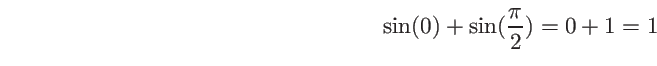
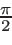
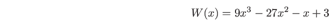

Wstecz: 11.11 Przeciążanie funkcji W górę: 11. Funkcje Dalej: 11.13 Funkcje lambda
Bardzo ważnym pojęciem w C/C++ są wskaźniki funkcyjne. Pamiętamy, że zmienne wskaźnikowe to takie, których wartością jest adres obiektu: liczby, napisu, tablicy itd. Definiując zmienną wskaźnikową musimy wskazać, na obiekty jakiego typu będzie ona wskazywać. Potrzebne jest to, między innymi, dlatego, aby można było stosować arytmetykę wskaźników opisaną już w rozdziale o wskaźnikach .
Obiektami szczególnego rodzaju są funkcje. Tak jak wartość zmiennej zapisana jest gdzieś w pamięci komputera, a zatem ma określony adres, tak i funkcja, w postaci jej binarnego kodu, musi oczywiście być gdzieś w pamięci komputera obecna. Jest zatem sens mówić o jej adresie. Skoro tak, to ma również sens pojęcie wskaźnika do funkcji — wskaźnika funkcyjnego.
Pomiędzy „normalnymi” a funkcyjnymi wskaźnikami jest jednak głęboka różnica. Określając typ zmiennej wskazywanej dla zwykłego wskaźnika określamy jednocześnie rozmiar pojedynczego wskazywanego przez ten wskaźnik obiektu. Takie obiekty możemy układać w pamięci kolejno jeden po drugim tworząc tablice. Jeśli znamy adres jednego z nich, to znając rozmiar pojedynczego obiektu znamy położenie drugiego, trzeciego i, ogólnie, n-tego. W przypadku funkcji jednak tak nie jest. Każda funkcja jest inna i, oczywiście, jej binarny kod ma inny rozmiar. Zatem:
Inna sprawa to kontrola typów. Generalnie zmienna to obszar pamięci przeznaczony na daną oraz informacja o typie tej danej. Informacja o typie jest potrzebna, aby móc prawidłowo zinterpretować binarną reprezentację zapisanej w pamięci danej, jak i po to, aby móc skontrolować poprawność operacji na niej. W przypadku funkcji kompilator również sprawdza czy ich użycie jest zgodne z ich specyfikacją wyrażoną w deklaracji czy definicji. Zatem w przypadku wskaźników funkcyjnych musi istnieć mechanizm pozwalający nie tylko na określenie adresu funkcji, ale też jej typu, liczby parametrów, typie tych parametrów itd.
Jak zatem zdefiniować wskaźnik do funkcji? Najlepiej zrozumieć to na podstawie przykładów. Przed ich analizą warto przypomnieć sobie zasady odczytywania definicji typów pochodnych, o których mówiliśmy w rozdziale o typach danych .
Czym wobec tego jest fun po następującej instrukcji:
int (*fun)(int);Czytamy zgodnie z zasadami z rozdziału o typach danych : ZMIENNA fun JEST — na prawo nawias zamykający, więc patrzymy w lewo — WSKAŹNIKIEM DO — wychodzimy z nawiasu, patrzymy w prawo — FUNKCJI Z JEDNYM PARAMETREM TYPU int ZWRACAJĄCEJ — patrzymy znów w lewo — WARTOŚĆ TYPU int. A zatem zmienna fun jest zmienną wskaźnikową przystosowaną do przechowywania adresów funkcji, ale nie dowolnych funkcji, tylko takich, które pobierają jeden argument typu int i zwracają wartość typu int. Podobnie jak po definicji
int *k;zmienna wskaźnikowa k istnieje, ale na razie nie zawiera żadnego użytecznego adresu, tak i w naszym przypadku funkcyjny wskaźnik fun po takiej definicji już istnieje, ale nie zawiera adresu żadnej konkretnej funkcji.
Zauważmy też, że nie można było opuścić nawiasów wokół *fun. Gdybyśmy je opuścili, to dostalibyśmy
int *fun(int);co przeczytalibyśmy tak: ZMIENNA fun JEST — na prawo nawias otwierający — FUNKCJĄ Z JEDNYM PARAMETREM TYPU int ZWRACAJĄCĄ — patrzymy w lewo — WSKAŹNIK DO — dalej w lewo — ZMIENNEJ TYPU int. A zatem byłaby to deklaracja funkcji fun.
Rozpatrzmy inny przykład:
double (*fun[3])(double);Czytamy: ZMIENNA fun JEST — na prawo nawias kwadratowy otwierający — TRZYELEMENTOWĄ TABLICĄ — przechodzimy na lewo — WSKAŹNIKÓW DO — wychodzimy z nawiasu, patrzymy w prawo — FUNKCJI Z JEDNYM PARAMETREM TYPU double ZWRACAJĄCEJ — patrzymy znów w lewo — WARTOŚĆ TYPU double. A zatem zmienna fun jest tablicą trzech wskaźników do funkcji określonego typu.
Jeśli pfun jest wskaźnikiem funkcyjnym pewnego typu, to jak możemy wpisać do niego adres istniejącej funkcji? Podobnie jak do wskaźnika p typu int* wpisujemy adres istniejącej zmiennej k typu int pisząc
p = &k;tak na zmienną pfun można przypisać
pfun = &fun;gdzie fun jest nazwą pewnej funkcji odpowiedniego typu. Konwersja od fun do &fun jest konwersją trywialną, tak więc równie dobrze w przypisaniu możemy pominąć operator wyłuskania adresu i napisać po prostu
pfun = fun;(czego, oczywiście, nie moglibyśmy zrobić dla zmiennych typu np. int) Pamiętać tylko trzeba, żeby nie napisać nawiasów przy nazwie funkcji — nawiasy pełnią rolę operatora wywołania funkcji, tak więc
pfun = fun();spowodowałoby wywołanie funkcji fun i próbę przypisania rezultatu do zmiennej pfun, najprawdopodobniej z opłakanym skutkiem.
Rozpatrzmy przykład programu w którym stosujemy wskaźniki funkcyjne:
1. #include <iostream>
2. #include <cmath>
3. using namespace std;
4.
5. const double PI = 4*atan(1.);
6.
7. double nasza(double);
8.
9. int main() {
10. double (*f)(double); ➊
11.
12. f = sin; ➋
13. cout << "sin(PI/2) = " << (*f)(PI/2) << endl; ➌
14.
15. f = &cos; ➍
16. cout << " cos(PI) = " << f(PI) << endl; ➎
17.
18. f = nasza; ➏
19. cout << " nasza(3) = " << f(3) << endl; ➐
20. }
21.
22. double nasza(double x) {
23. return x*x;
24. }
Na początku włączamy nagłówek cmath, aby mieć dostęp do funkcji matematycznych, w tym przypadku funkcji sin i cos.
W linii ➊ definiujemy zmienną f, która jest wskaźnikiem funkcyjnym przystosowanym do wskazywania funkcji pobierających jeden argument typu double i zwracających wartość typu double. W linii ➋ inicjujemy wartość tego wskaźnika adresem bibliotecznej funkcji sin (sinus) — jak już wiemy, możemy opuścić operator pobrania adresu '&'. W linii ➍ zmieniamy wartość wskaźnika — teraz wskazuje na funkcję cos (kosinus) — a następnie zmieniamy jego wartość jeszcze raz tak, aby wskazywał na zdefiniowaną przez nas samych funkcję nasza (➏). Wszystkie te funkcje są oczywiście, i muszą być, tego samego typu double → double. Jak widzimy, przy przypisywaniu na wskaźnik funkcyjny można używać operatora wyłuskania adresu lub go opuścić.
W liniach ➌, ➎ i ➐ aktualnie wskazywana przez wskaźnik f funkcja jest wywoływana. Za każdym razem jest to inna funkcja, o czym przekonuje nas wydruk:
sin(PI/2) = 1
cos(PI) = -1
nasza(3) = 9
Skoro
f
jest wskaźnikiem, to formalnie najpierw
powinniśmy wyłuskać wskazywany obiekt (czyli funkcję) za pomocą
operatora dereferencji '
*', a następnie dokonać wywołania:
tak właśnie robimy w linii ➌ (nawias wokół
*f jest tu
konieczny, gdyż operator wywołania funkcji, czyli nawiasy, ma wyższy
priorytet od operatora dereferencji '*').
Jednak, jak widzimy w liniach ➎ i ➐, w przypadku wskaźników
funkcyjnych dereferencja nie jest konieczna — można użyć
identyfikatora wskaźnika funkcyjnego tak jak nazwy funkcji (oczywiście,
dla „normalnych” wskaźników dereferencji nie można w ten sposób
opuszczać).
Wskaźnik funkcyjny może też być parametrem funkcji. Deklaracja takiego parametru wygląda tak jak deklaracja wskaźnika funkcyjnego, tyle że w deklaracji funkcji można, choć nie trzeba, pominąć nazwę (w definicji jest ona jednak potrzebna). Tak więc
double fun( double (*f)(double), double a, double b) {
return f(a) + f(b);
}
jest definicją funkcji
fun, której pierwszym parametrem
jest funkcja typu
double
→
double,
a dwoma następnymi są zwykłe parametry typu
double
(tu nazwane
a i
b). W treści funkcji
f
jest wywoływana z argumentem
a
i
b.
Tak zdefiniowaną funkcję możemy wywołać w programie
na przykład tak (występująca tu funkcja
atan
oznacza biblioteczną funkcję arkus tangens):
#include <cmath>
const double PI = 4*atan(1.);
// ...
double result = fun(sin, 0, PI/2);
Jak wynika z treści funkcji
fun, wynikiem
('
result') powinna być liczba
Oczywiście, jak zwykle, możemy pominąć nazwy parametrów, jeśli
chodzi nam tylko o deklarację. Powyżej zdefiniowaną funkcję
fun
zadeklarować moglibyśmy zatem tak:
double fun(double(*)(double),double,double);co wygląda dość ezoterycznie. Można uprościć sobie nieco życie wprowadzając synonim (alias) skomplikowanego typu za pomocą instrukcji typedef (o tej pożytecznej instrukcji mówiliśmy już w rozdziale o tym specyfikatorze ). W naszym przypadku moglibyśmy wprowadzić synonim typu wskaźnik do funkcji z jednym parametrem typu double zwracającej double:
typedef double (*FUNDtoD)(double);i użyć go potem w deklaracji naszej funkcji fun:
double fun( FUNDtoD, double, double);lub w deklaracjach/definicjach funkcyjnych zmiennych wskaźnikowych
#include <cmath>
// ...
FUNDtoD f = sin;
// ...
f = atan;
// ...
Takie funkcje od funkcji nie są niczym egzotycznym.
Wyobraźmy sobie, że chcemy napisać funkcję obliczającą
pierwiastki (miejsca zerowe) funkcji. Nie chcielibyśmy pisać osobnej
takiej funkcji dla każdej możliwej funkcji, której pierwiastka
szukamy. Opracujemy raczej ogólny algorytm, a konkretną
funkcję, której pierwiastek chcemy policzyć, dostarczymy jako
argument.
Prostą realizację tego podejścia widzimy w następującym programie:
1. #include <iostream>
2. #include <cmath>
3. #include <cassert>
4. using namespace std;
5.
6. const double PI = 4*atan(1.);
7.
8. typedef double (*FD2D)(double); ➊
9.
10. double root(FD2D, double, double); ➋
11.
12. double nasza(double x) {return 3 - x*(1 + x*(27 - x*9));}
13.
14. int main() {
15. double r;
16.
17. cout.precision(15); ➌
18.
19. r = root(sin, 3, 4); ➍
20. cout << "sin " << r << endl
21. << "dokladnie: " << PI << endl << endl;
22.
23. r = root(cos, -2, -1.5); ➎
24. cout << "cos: " << r << endl
25. << "dokladnie: " << -PI/2 << endl << endl;
26.
27. r = root(nasza, 0, 1); ➏
28. cout << "nasza: " << r << endl
29. << "dokladnie: " << 1./3 << endl;
30.
31. r = root([] (double x) -> double { ➐
32. return 3-x*(1+x*(27-x*9));
33. }, 0, 1);
34. cout << "lambda: " << r << endl
35. << "dokladnie: " << 1./3 << endl;
36. }
37.
38. double root(FD2D fun, double a, double b) {
39. /* Znajdowanie pierwiastka funkcji metodą bisekcji.
40. fun(a) i fun(b) muszą być różnych znaków */
41. static const double EPS = 1e-15;
42. double f, s, h = b-a, f1 = fun(a), f2 = fun(b);
43.
44. if (f1 == 0) return a;
45. if (f2 == 0) return b;
46. assert(f1*f2 < 0); ➑
47.
48. do {
49. if ((f = fun((s=(a+b)/2))) == 0) break;
50. if (f*f1 < 0) {f2 = f;b = s;}
51. else {f1 = f;a = s;}
52. } while ((h /= 2) > EPS);
53.
54. return (a+b)/2;
55. }
Typem pierwszego parametru funkcji root (➋) jest funkcja (wskaźnik do funkcji) typu double → double. Typowi temu nadaliśmy nazwę (alias) FD2D (➊). Oprócz wskaźnika funkcyjnego, funkcja root pobiera dwie liczby: są to wartości argumentów, pomiędzy którymi miejsce zerowe przekazanej funkcji będzie szukane. Dla prawidłowego działania algorytmu wymagane jest, aby w tych dwóch punktach wartości tej funkcji były różnych znaków. Aby nie dopuścić do produkowania bezsensownych wyników, warunek ten jest sprawdzany (➑) za pomocą makra assert dostępnego dzięki dołączeniu pliku nagłówkowego cassert. W argumencie assert podajemy wyrażenie logiczne. Wartość tego wyrażenia jest sprawdzana w czasie wykonania programu i jeśli rezultatem jest fałsz, program jest przerywany, a do standardowego strumienia błędów (stderr) wpisywany jest komunikat lokalizujący linię, gdzie to przerwanie nastąpiło. Sprawdzanie za pomocą assert można wyłączyć definiując dyrektywą preprocesora nazwę NDEBUG (np.: #define NDEBUG w pliku źródłowym lub -DNDEBUG jako opcja kompilacji).
Jeśli tylko znaki wartości funkcji fun w punktach a i b są różne, a funkcja jest ciągła, to nasz algorytm praktycznie zawsze powinien zadziałać i zwrócić znaleziony pierwiastek.
W programie głównym wywołujemy funkcję root cztery razy. Za pierwszym razem (➍) posyłamy do niej jako pierwszy argument funkcję sin (sinus), a jako przedział do poszukiwania pierwiastka podajemy przedział [3, 4]. W tym przedziale funkcja sin ma dokładnie jedno miejsce zerowe, x = π, o czym my wiemy, ale czego nie wie oczywiście funkcja root, pracowicie go szukając.
Następnie (➎) obliczamy miejsce zerowe funkcji cos (kosinus) w przedziale [- 2, - 1.5] (tym pierwiastkiem jest - ). W linii ➏ szukamy miejsca zerowego funkcji nasza zdefiniowanej przed funkcją main. Funkcją tą jest wielomian

o pierwiastkach x1, 2 = ± oraz x3 = 3. Ponieważ pierwiastka poszukujemy w przedziale [0, 1], powinniśmy znaleźć pierwiastek x =W końcu, w linii ➐, szukamy zera funkcji równoważnej funkcji nasza ale zadanej tym razem w postaci funkcji lambda (więcej o takich funkcjach powiemy w rozdziale o funkcjach lambda ).
Po znalezieniu miejsc zerowych drukujemy wyniki: pierwiastki znalezione przez funkcję root i pierwiastki dokładne, które w przypadku tych funkcji znamy. Wywołanie ' cout.precision(15)' z linii ➌ służy wyłącznie do tego, aby znalezione liczby wypisane zostały z dokładnością do 15 cyfr a nie, jak to jest domyślnie, z dokładnością do 6 cyfr znaczących. Więcej o sposobach formatowania wydruku w rozdziale o operacjach we/wy .
Jak widać,
sin 3.14159265358979
dokladnie: 3.14159265358979
cos: -1.5707963267949
dokladnie: -1.5707963267949
nasza: 0.333333333333333
dokladnie: 0.333333333333333
lambda: 0.333333333333333
dokladnie: 0.333333333333333
pierwiastki zostały policzone prawidłowo, z dokładnością do 15 miesc
znaczących.
Nic nie stoi na przeszkodzie, aby budować tablice funkcji (czyli właściwie wskaźników do funkcji). W poniższym programie najpierw definiujemy aliasy dla użytych w dalszej części typów (➊, alias TABNAM jest tu zdefiniowany z użyciem nowej składni z C++11). Tak więc po
typedef double (*TABFUN[])(double);TABFUN jest nazwą typu „tablica wskaźników do funkcji pobierających jeden argument typu double i zwracających wartość typu double”. Nazwa TABNAP oznacza typ tablica wskaźników do char, czyli tablica C-napisów (będą to nazwy funkcji).
1. #include <iostream>
2. #include <cmath>
3. using namespace std;
4.
5. typedef double (*TABFUN[])(double); ➊
6. //typedef const char *TABNAP[];
7. using TABNAP = const char* []; // C++11
8.
9. void fundruk(TABFUN,TABNAP,double);
10.
11. int main() {
12. const double PIover4 = atan(1.);
13.
14. TABFUN tabfun = { sin, cos, tan }; ➋
15. TABNAP tabnap = {"sin","cos","tan"};
16.
17. cout << "sizeof(tabfun) = " << sizeof(tabfun) << endl
18. << "sizeof(tabnap) = " << sizeof(tabnap) << "\n\n";
19.
20. for (int i = 0; i < 3; i++) { ➌
21. cout << "tabfun[" << i << "](pi/4) = "
22. << tabfun[i](PIover4) << " ("
23. << tabnap[i] << ")\n";
24. }
25.
26. fundruk(tabfun,tabnap,PIover4);
27. }
28.
29. void fundruk(TABFUN f, TABNAP t, double x) {
30. cout << "\n";
31. for (int i = 0; i < 3; i++) {
32. cout << "fundruk: " << t[i] << " "
33. << "wartosc: " << f[i](x) << endl;
34. }
35. }
W linii ➋ definiujemy obiekt typu TABFUN, czyli tablicę wskaźników do funkcji i inicjujemy ją adresami trzech istniejących funkcji. Co prawda, nie użyliśmy operatora wyłuskania adresu ' &', ale został on domyślnie zastosowany. Tablica jest tablicą wskaźników, a nie funkcji jako takich — przekonuje nas o tym choćby wydrukowany rozmiar tej tablicy (24); odpowiada rozmiarowi trzech obiektów po osiem bajtów każdy.
sizeof(tabfun) = 24
sizeof(tabnap) = 24
tabfun[0](pi/4) = 0.707107 (sin)
tabfun[1](pi/4) = 0.707107 (cos)
tabfun[2](pi/4) = 1 (tan)
fundruk: sin wartosc: 0.707107
fundruk: cos wartosc: 0.707107
fundruk: tan wartosc: 1
Standard nie wymaga, aby wskaźniki funkcyjne miały ten sam
rozmiar co inne wskaźniki — mogą one być zaimplementowane
w zupełnie inny sposób. Dlatego nie ma żadnego sensu rzutowanie
ich na jakikolwiek inny typ wskaźnikowy.
W pętli (➌) wywołujemy kolejno funkcje z tablicy. Ponieważ element tabfun[i] jest wskaźnikiem do funkcji, który, jak wspomnieliśmy, jest konwertowany do funkcji, zapis tabfun[i](PIover4) jest wywołaniem funkcji, do której wskaźnik jest (i + 1)-ym elementem tablicy tabfun; argumentem wywołania jest wartość zmiennej PIover4 (czyli liczba π/4).
Funkcja fundruk pobiera jako argumenty tablicę wskaźników funkcyjnych, tablicę napisów (wskaźników typu char*) i liczbę typu double. W ciele funkcji wykonujemy te same wywołania co w funkcji main: funkcje które należy wywołać, zostały przekazane w tablicy, która wewnątrz funkcji fundruk nazywa się f.
Tak jak zwykłe wskaźniki, tak i wskaźnik do funkcji może być
nie tylko parametrem, ale i wartością zwracaną funkcji.
1. #include <iostream>
2. #include <cmath>
3. using namespace std;
4.
5. typedef double (*FUNDtoD)(double); ➊
6. typedef FUNDtoD TABFUN[];
7.
8. FUNDtoD funmax(TABFUN,double); ➋
9.
10. double fun0(double x) { return log(x); }
11. double fun1(double x) { return x*x; }
12. double fun2(double x) { return exp(x); }
13. double fun3(double x) { return sin(x); }
14. double fun4(double x) { return cos(x); }
15.
16. int main() {
17. TABFUN tabfun = { fun0, fun1, fun2, fun3, fun4 }; ➌
18.
19. FUNDtoD fun = funmax(tabfun,1); ➍
20.
21. int i;
22. for (i = 0; i < 5; ++i)
23. if (fun == tabfun[i]) break;
24.
25. cout.precision(14);
26. cout << "Najwieksza wartosc dla x=1 ma funkcja nr "
27. << i << ".\nWynosi ona " << fun(1) << endl; ➎
28. }
29.
30. FUNDtoD funmax(TABFUN f, double x) {
31. double m = f[0](x),z;
32. int k = 0;
33.
34. for (int i = 1; i < 5; i++) {
35. if ( (z = f[i](x)) > m) {
36. m = z;
37. k = i;
38. }
39. }
40. return f[k];
41. }
Najpierw (➊) definiujemy alias FUNDtoD dla typu wskaźnik do funkcji double → double i za jego pomocą w linii następnej definiujemy synonim TABFUN dla typu tablica wskaźników do funkcji double → double. Dzięki tym aliasom deklaracja funkcji funmax (➋) jest w miarę czytelna: jest to funkcja, której pierwszym argumentem będzie tablica wskaźników funkcyjnych, a wartością zwracaną pojedynczy wskaźnik do funkcji. Zapisanie tego bez użycia instrukcji typedef prowadziłoby do niezbyt czytelnych wyrażeń. Zadaniem funkcji funmax jest znalezienie tej z pięciu funkcji, dla której wartość w punkcie x jest największa. Wskaźnik do tej właśnie funkcji jest wartością zwracaną przez funmax.
Definijemy zatem pięć prostych funkcji odpowiedniego typu. W funkcji main tworzymy tablicę wskaźników funkcyjnych (obiekt typu TABFUN — ➌) i inicjujemy ją adresami naszych pięciu funkcji. Następnie posyłamy tablicę do funkcji funmax (➍) i wartość zwracaną, która jest wskaźnikiem funkcyjnym, zapamiętujemy w zmiennej fun, która jest odpowiedniego typu FUNDtoD.
W pętli sprawdzamy, którą z naszych pięciu funkcji
otrzymaliśmy jako wynik działania funkcji
funmax.
Wypisujemy numer funkcji zwróconej przez
funmax
i tę znalezioną funkcję wywołujemy dla
argumentu 1 (➎), aby się przekonać, że jest to rzeczywiście
właściwa funkcja. W naszym przypadku powinna to być funkcja
exp(x)
(czyli ex), która dla x = 1 przyjmuje wartość
równą podstawie logarytmu naturalnego (
e  2.71828).
Wydruk przekonuje nas, że tak jest w istocie:
2.71828).
Wydruk przekonuje nas, że tak jest w istocie:
Najwieksza wartosc dla x=1 ma funkcja nr 2.
Wynosi ona 2.718281828459
Uogólnieniem pojęcia funkcji w C++ jest obiekt funkcyjny. O takich obiektach będziemy mówić w rozdziale o obiektach funkcyjnych .
T.R. Werner, 28 września 2018; 23:31